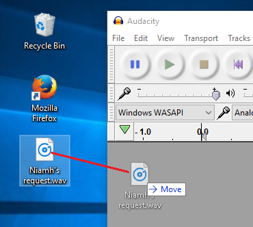
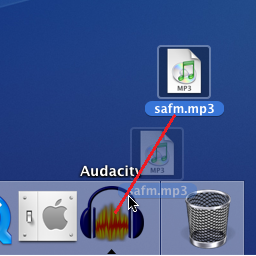
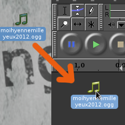
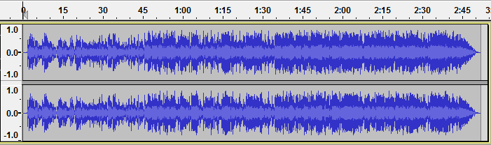
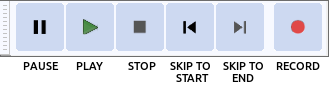
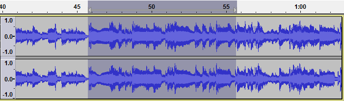
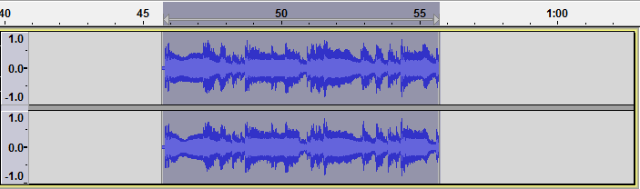

Tutorial - Editing an Existing Audio File
| If you have just made a recording it is strongly recommended that you immediately export your audio using to WAV or AIFF (ideally to an external drive) as a safety copy before you start editing the project. |
Objective
The objective of this tutorial is to learn how to edit an audio file. To achieve this objective, we are going to import an existing sound file, remove all but 10 seconds of this file, apply a 1-second fade-out at the end, export the results, and play it in your favorite audio player. These steps will introduce the basic steps commonly used when editing the contents of an audio file.
Step 1: Find a file to edit
Audacity can import many common audio file formats, including WAV, AIFF, and MP3. If the optional FFmpeg library is installed, a larger range of formats, including WMA and the audio content of most video files, can be imported. Audacity cannot import copy-protected music files.
If you want to edit music that you have on an audio CD, you need to "rip" the music into an audio file. See the Audio CDs page for information on getting the audio off of CDs and into Audacity.
Don't have any audio files handy? There is lots of free music online! Here is one site where you can download free music: Opsound
The recordings on this site are free, distributed under the Creative Commons Attribution-Sharealike license, which gives you the right to create a derivative work without paying royalties, as long as you give credit and make your derivative work free, too. This is similar to the license for Audacity, which allows any devloper to modify it and redistribute it for free.
Step 2: Import the file into Audacity
First launch Audacity, then import an audio file by selecting .
A quicker method is to just drag and drop the file as in the following examples:
|  |  |  | |||
| Windows: Drag the audio file icon into the open Audacity window. |
Mac: Drag the audio file icon to the Audacity icon in the Dock (does not work for all formats yet). |
Linux: Drag the audio file icon into the open Audacity window. |
All three platforms support:
- dragging the audio file into the Audacity window
- dragging the audio file to the Audacity icon on the Desktop.
Specific dragging behavior according to platform:
- On Windows and Mac you can also drag to Audacity's icon in a file manager application.
- On Mac and Linux you can drag the file to the Audacity icon in the Dock or Taskbar respectively to import the file into Audacity.
- On Windows, dragging the file to the Audacity icon in the Taskbar will either switch the window to Audacity if it is running (from where you can drag the file in), or if Audacity is closed, give the option to launch Audacity with the file imported.
[email protected]:~$ audacity Desktop/song.mp3 Desktop/speech.wav
imports the "song.mp3" and "speech.wav" files located on the Desktop in separate Audacity windows.
Step 3: Look at the waveform
- 
This image above shows a stereo waveform. The left channel is displayed in the top half of the track and the right channel in the bottom half. The track name takes the name of the imported audio file ("No Town" in this example). Where the waveform reaches closer to the top and bottom of the track, the audio is louder (and vice versa).
The ruler above the waveform shows you the length of the audio in minutes and seconds.
Removing any DC offset (if present)
DC offset can occur in audio files so that the recorded waveform is not centered on the horizontal line at 0.0 amplitude. It can be caused by recording with a faulty soundcard. The example above is centered on 0 correctly and carries no DC offset. If your waveform is not centered, see the Normalize page for how to use Normalize to remove DC offset and how to check if your Windows sound device can perform this correction automatically.
Step 4: Listen to the imported audio

The image above shows Transport Toolbar.
Click the Play button
 to listen to the audio. Click the Stop button
to listen to the audio. Click the Stop button
 to stop playback. If you do not hear anything, see Audacity Setup and Configuration.
to stop playback. If you do not hear anything, see Audacity Setup and Configuration.
You can use the Space key on the keyboard as a shortcut for Play or Stop.
Click on Selection Tool
 then click on the waveform to choose a place to start, then click the Play button
then click on the waveform to choose a place to start, then click the Play button
 . Click and drag to create a selection, and then when you click Play button
. Click and drag to create a selection, and then when you click Play button
 only the selection will play.
only the selection will play.
- Press Left or Right to move the cursor left or right respectively in the waveform.
- Hold down Shift while pressing Left or Right to create then extend a selection leftwards or rightwards respectively.
- Hold down Shift and Ctrl while pressing Left or Right to contract an existing selection leftwards or rightwards respectively.
Clicking the Skip to Start button
 or pressing the Home key will move the cursor to the beginning of the track. It's kind of like rewind, but it's not for playback - it will only work when playback is stopped.
or pressing the Home key will move the cursor to the beginning of the track. It's kind of like rewind, but it's not for playback - it will only work when playback is stopped.
Similarly, clicking the Skip to End button or pressing the End key will move the cursor to the end of the track.
To jump the playback position forwards or backwards from where it is now, click on the Timeline above the waveform at the point you wish to hear.
- Press Left or , to move the playback cursor back one second.
- Press Right or . to move the playback cursor forward one second.
- Press Shift + Left or Shift + , to move the playback cursor back 15 seconds.
- Press Shift + Right or Shift + . to move the playback cursor forward 15 seconds.
Step 5: Create a 10-second clip from your audio
You edit audio waveforms in Audacity in much the same way as you would edit text in a word-processing document. When you are editing text you first select the text you want to change and then choose what you want to do with it. You might want to cut or copy the text, delete it, paste new text in its place, or change it to bold. You do the same thing in Audacity: first zoom and select the range of audio you want to change, and then choose what you want to do with it.
The image above shows Edit Toolbar with the Zoom buttons highlighted. This
 is the Zoom In tool, and this
is the Zoom Out tool.
is the Zoom In tool, and this
is the Zoom Out tool.
To zoom in to get a closer look at the waveform, first choose the Selection Tool
 , then click near the point you're interested in, then click the Zoom In button. Keep clicking the Zoom In button until you see the detail you need. Note that when you click the Zoom In button the cursor is centered on the screen.
, then click near the point you're interested in, then click the Zoom In button. Keep clicking the Zoom In button until you see the detail you need. Note that when you click the Zoom In button the cursor is centered on the screen.
There are also menu commands and keyboard shortcuts for zooming. (or Ctrl + 1) is the same as clicking the Zoom In button. (or Ctrl + 3) is the same as clicking the Zoom Out button. (or Ctrl + F) will zoom the waveform so it fits in the window.
Use the Zoom commands so that you can make maximal use of your Audacity window to see as much detail as you need, or to make sure you see the entire file when necessary.
Walk through deleting all but approximately 10 seconds of selected audio
To cut this audio file down to exactly 10 seconds, use these following steps.
| These steps require a mouse, except for using Space on the keyboard to play the selection and C to play either side of the selection. See below for how to create and adjust selections using the keyboard. |
- With playback stopped, click near the point where you want the 10-second piece to begin.
- Zoom in until the Timeline shows 10 seconds or more before and after the cursor.
- While holding down the Shift key, click 10 seconds to the right of the cursor.
- Note that this is just like selecting a range of text in a word processor

- Press Space to listen to the entire selection. Playback will stop when the end of the selection is reached.
- Adjust the start and end of the selection with the mouse as follows.
- 5.1. Move the pointer over the start of the selection - the cursor will change to a left-pointing hand.
- 5.2. Click and drag to adjust the beginning of the selection.
- 5.3. You can adjust the end of the selection in a similar manner.
- Press Space to listen to the adjusted selection. You do not have to listen to all of it; press Space again at any time to stop playback.
- A convenient way to listen to only the adjusted start of the selection is to move the mouse pointer a little after the start of the selection then press B. The selection plays from the start of the selection to the pointer. To hear the adjusted end of the selection, move the pointer close to the selection end, then press B to play from the pointer to the selection end.
- You can also play a length of audio either side of the selection by pressing C. This lets you make sure there is no audio you want to keep that will be removed. Playing either side of the selection would also be useful if you later wanted to cut a small piece out of that selection - you would select the small piece to be cut, then could preview how the audio would sound after the cut. To adjust the length of audio played before and after the selection, go to Cut Preview in the Playback Preferences.
- Pressing Shift + Left will expand the selection to the left.
- Pressing Shift + Right will expand the selection to the right.
- Pressing Shift + Ctrl + Left will contract the selection from the right.
- Pressing Shift + Ctrl + Right will contract the selection from the left.
- Without a mouse, use Ctrl + F6 to navigate into Selection Toolbar, then Tab between the controls.
- In "Selection Start", type the starting point of your selection if there is not yet a selection.
- Select the
 Length radio button above the second group of numbers in Selection Toolbar if it is not yet selected.
Length radio button above the second group of numbers in Selection Toolbar if it is not yet selected. - If there is no selection yet, select the digit after the "m" in the "Length" box and type 1 (one) on your keyboard. This selects exactly 10.000 seconds from the starting point you chose.
- Once there is a selection, you can adjust its length in the same way. Let's suppose you dragged a little less than 10 seconds in the waveform, but you need the selection to be exactly 10 seconds.
- Select the first digit to the right of the decimal point in the "Length" box.
- Type 0 (zero) - the digit changes to zero, the digit to the right is selected and the selection in the waveform changes to match.
- Type 0 (zero) twice more - the selection length is now 10.000 seconds, accurate to one thousandth of a second.
You've now selected the portion of the audio that you want to keep. Make sure you have pressed Space to stop if the track is still playing, then to delete everything except the selected audio, click on .
- 
If you make a mistake, you can always click on . Audacity has unlimited Undo and Redo. You can undo your editing actions all the way back to when you imported the file. You can also Redo actions that you have undone.
You now have a region of audio that starts several seconds (or perhaps minutes) from the beginning of the track. You could move the audio to the beginning of the track, using , but this is not a necessary step because when exporting, Audacity will ignore the white space between time zero and the start of the audio.
Step 6: Fade out the last second
- Click the Skip to End button .
- Zoom In until you can see the last two or three seconds of the waveform.
- Click in the waveform about 1 second before the end.
- Click on .
- Click on . The last second of the audio is smoothly faded out.
Note that we always select some audio first, then choose what action we want to perform on it.
Step 7: Export the resulting file
When you save an Audacity project with you are doing just that - saving an Audacity project. Audacity projects can be opened only by Audacity. If you want other applications (such as iTunes or Windows Media Player) to be able to open this file you need to export it.
Before we export this 10 second clip to a separate file we're going to simplify things a bit. Go to the Import / Export Preferences, and under When exporting tracks to an audio file uncheck "Show Metadata Editor prior to export step". Metadata Editor adds extra information about the speech or music into the file - see For More Information below to learn more. You can go back to the Import / Export Preferences at any time to re-enable Metadata Editor.
Exporting a WAV file
- Click on - the standard "Save" dialog for your operating system appears.
- Give the file a different name. Audacity always suggests a name for the file that is the same as the name of your Audacity project. It is always best to alter this so you do not confuse your exported file with your Audacity project.
- Choose a location to save the file in the usual manner.
- At the bottom of the Save dialog is a dropdown menu labeled "Format". From this menu choose "WAV (Microsoft) signed 16-bit PCM".
- There are no options for the WAV file format, so there is no need to click the button.
- Click the button to complete the export of your project to a WAV file.
Exporting an MP3 file
In order to export files from Audacity in MP3 format you will need to download and install the optional LAME MP3 encoder. Instructions are here . Once you have downloaded and installed the LAME encoder you will be able to create MP3 files using Audacity.
The steps for exporting a file in MP3 format are the same as for a WAV file, except:
- In the Save dialog, from the "Format" menu, choose "MP3 files"
- Then click the button to set the bit rate and other options for the MP3 file.
Step 8 - Testing your new Audio Production
To demonstrate the difference between an Audacity project (the AUP) file, and a sound file you export from an Audacity project:
- Click on , saving changes if asked.
- Find the AUP file on your computer and attempt to open it with the audio player of your choice (for example iTunes, Windows Media Player). You cannot.
- Find the exported WAV file on your computer and attempt to open it with the audio player of your choice. Success!
You cannot open an Audacity project in a media player. Only by exporting your project can you listen to it in a media player.
Once you've exported your project you may want to keep the original project file (AUP) and its associated _data folder around in case you want to make some changes to it in the future.
Where to go from here
More tutorials
For more information
- Opening or Importing Audio Files: File Menu > Open, File Menu > Import
- Tracks and Waveforms: Audio Tracks, Audacity Tracks and Clips, Audacity Waveform
- Playing a file: Playing and Recording
- Editing a track: Edit Menu, Zooming
- Effects: Effect Menu
- Saving: Audacity Projects
- Exporting: File Menu > Export...
- Metadata Editor: Metadata Editor
- MP3 Export Options: MP3 Export Options